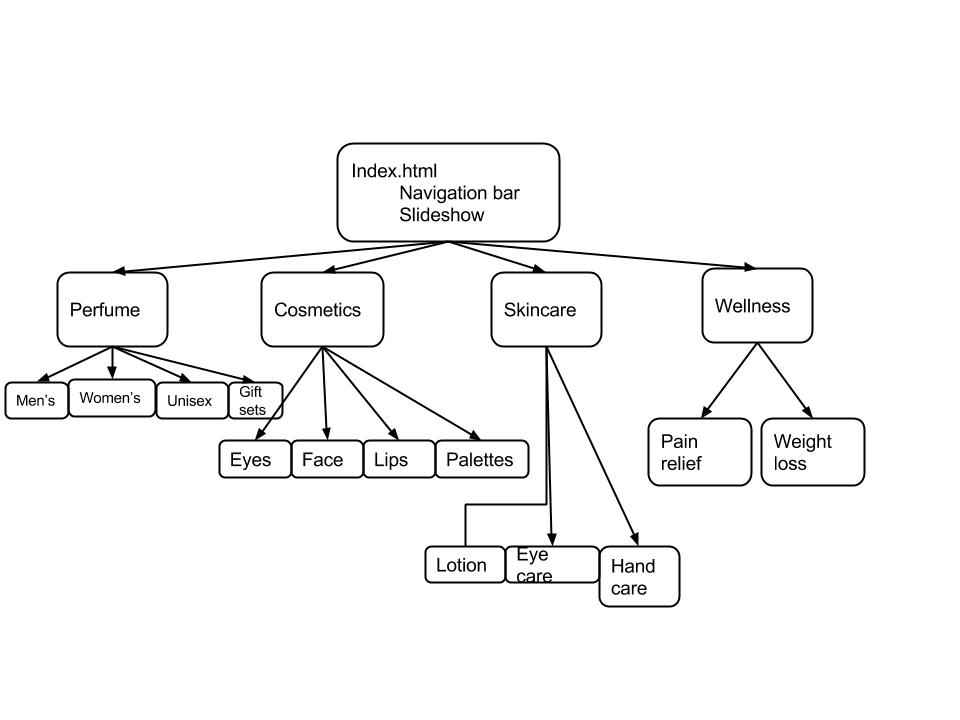

Sumayya's father is the owner of a branded cosmetics and perfume company. He sells cosmetics and perfume to both retailers and individual customers. This company already has a website mizspa.com, but he is not satisfied with his website. The problem is that his website seems untrustworthy and somewhat cheap, despite the legitimacy and price of the products. His website's FAQ are full of questions asking whether the website is real or a counterfeit.

He wants a new website that would make his company look trustworthy, so that customers will not doubt them.
Client: mizspa's owner
Audience: Customers looking to buy products from mizspa online
These are the projected objectives of the website. We will update them after our meeting with the client on December 17th, 2014.
The very main objective of this project is to make the website and company look trustworthy. The first step is to look at the homepages. To attain this, we will first refer to other well-known and trusted cosmetics and perfume companies. We will look to Sasa HK, Chanel, Dior, Louis Vuitton, Gucci, and more.


On Wednesday December 17th, my group and I met with our clients- the owner and the coordinator of Sky On International Ltd. They are the leaders of Mizspa. Through this meeting, we learned a lot about the company and their website. We got a clear idea of the objectives, purpose, and audience. It is a little different from what we expected. These are some things we learned from the interview.
Mizspa's original website may have some changes, but what the client needs is a Mizspa.com.hk, which would be more suited for local Hong Kong customers. This new local website is different from the original in the sense that it stresses the benefits for local customers. The company also wants to highlight popular perfume and cosmetics choices of Hong Kong people so that customers could follow up with the trend.
When our client was talking about SEO, we all did not know what it meant. After the meeting, we tried to research what SEO meant. It turns out that SEO is an abbreviation for Search Engine Optimization. It is the process of getting traffic from search results on search engines. A way to describe the webpage on search listings is to use the meta description tag.
After finding the objectives and purpose, we came up with a few ideas of flow chart of the pages that we will have on our website.

This is the first flowchart we made. We decided that this sitmap is not viable because the two subpages that we have are not audience-oriented. Our audience would probably be interested in the locally popular products, but not many would be interested in clicking the sets page.

This sitemap is one that mimicks the sitemap of the original mizspa website. There is a huge amount of subpages in which users need to click before getting to the page we want. We are after a simple, easy navigation and this does not do the job.

We chose to use this flowchart because it is simple and does not require a lot of clicks at all to get to a target page. The top subpages are categories that we feel the audience would be interested in. There are also enough pages for the client to reference from this demo to make their own site.
This is how I made my homepage.